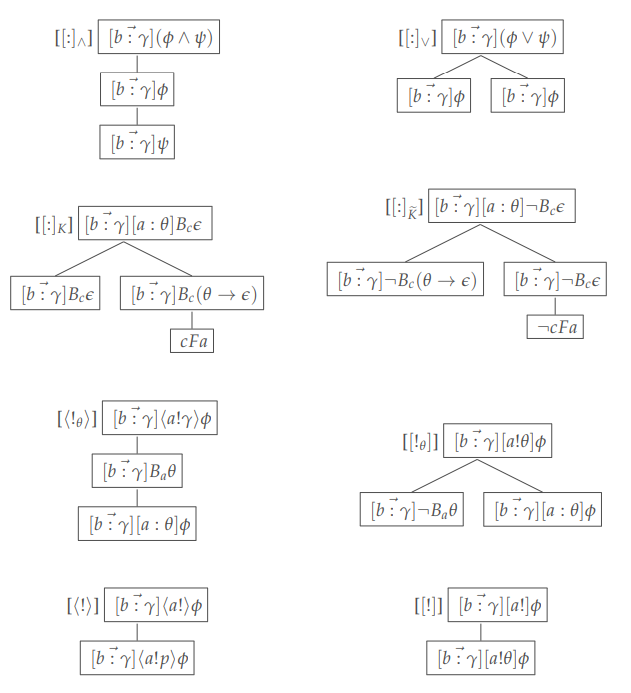
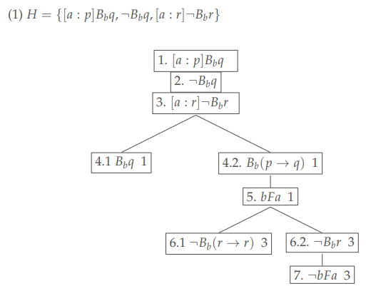
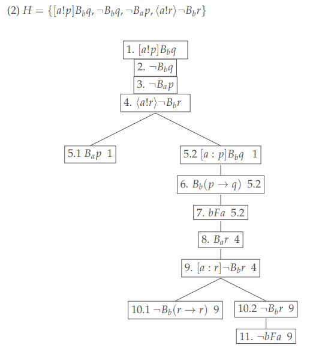

The formula for an arbitrary social announcement, denoted by $\langle a \rangle\phi$ or $\langle a!\rangle \phi$, signifies that agent $a$ is capable of making a (sincere) social announcement such that $\phi$ holds.
Arbitrary announcements have been added and studied in Public Announcement Logic, denoted by $\Diamond$, known as $\mathsf{APAL}$.
Kuijer's Counterexample
Currently we do not know if $\mathsf{APAL}$ has finitary axiomatization. The following rule does not preserve validity.
From $ \langle \chi\rangle\langle q\rangle\phi\rightarrow\psi$, infer $ \langle \chi\rangle\Diamond\phi\rightarrow\psi$ where $q\not\in Var(\psi)\cup Var(\phi)\cup Var(\chi)$.Noncompactness
The logic of $L_{SAL}$ is not compact. Here are two counterexamples.
$\{\langle a\rangle(B_{a}\bot \wedge \neg B_{b}\bot), \langle a\rangle B_{b}\bot \}\cup \{\neg B_{a}\theta ~~|~~ \theta~~is~~not~~an~~instance ~~of~~tautology~~\}$ $\{\langle a!\rangle B_{b}p \wedge \neg B_{b} p \}\cup\{\neg B_{a}\theta ~~|~~ \theta~~is~~not~~an~~instance~~of~~tautology~~\}$Main Results
By a model transformation technique, we show the following rules preserve validity.
[$A^{S}$E] From $\langle a!p\rangle\phi \rightarrow \psi $, infer $ \langle a!\rangle\phi \rightarrow \psi$[$A^{F}$E] From $[a:p]\phi \rightarrow \psi$, infer $\langle a\rangle\phi\rightarrow \psi$
where $p$ is a propositional variable that does not occur $\phi$ or $\psi$.
We also showed the soundness of the following axioms and rules:
[$K^{S}_A$] $[a!](\phi \rightarrow \psi) \rightarrow ([a!]\phi \rightarrow [a!]\psi)$
[$K^{F}_{A}$] $[a](\phi \rightarrow \psi) \rightarrow ([a]\phi \rightarrow [a]\psi)$
[$A^{S}$I] $\langle a!\theta\rangle\phi \rightarrow \langle a!\rangle\phi$
[$A^{F}$I] $[a:\theta]\phi \rightarrow \langle a\rangle\phi$
[$[a]$-Nec] From $ \phi$, infer $ [a]\phi$
[$[a!]$-Nec] From $\phi$, infer $ [a!]\phi$
Finitary Axiomatization
System $\mathsf{sal}$ is obtained by $\mathsf{Fsal}$ plus [SRed] and all axioms and ruls above.
$\mathsf{sal}$ is a sound and weakly complete finitary axiomatization.
Tableau Calculus
In Chapter four, we present a complete tableau system.

- A branch $\mathfrak{B}$ is contradictory if it contains a formula $\neg B_{a}\theta$ such that $\theta$ is a tautology, or, in addition, formulas $B_{a}\theta_1, ... B_{a}\theta_n$ such that $\theta_1\land...\land\theta_n\to\theta$ is a tautology.
- A branch $\mathfrak{B}$ is contradictory if it contains both $bFa$ and $\neg bFa$.
Example of Tableau
- This Tableau System allows for the construction of proofs for theorems in $\mathsf{sal}$.
- It can also generate models that satisfy various formulas.


Epistemic Distribution
Coherences
We define five coherences for our original models.
- Global coherence: All agents' beliefs are collectively consistent.
- Local coherence: No individual agent's beliefs become inconsistent following sincere announcements.
- Weak coherence: Each agent's beliefs are internally consistent.
- Cohesive coherence: Agents with inconsistent beliefs are separated.
- Flowing coherence: No contradictory flow can be made.
Results
- Following relationship expressible: wc, cc, lc, gc.
- Definable: fc, wc.
- Failure of free announcement necessitation: Indirect axiomatizations are needed.
- Preversing validity by sincere announcement necessitation: cc, lc, gc.
Variants
In Chapter 5, we explore some potential variants of social announcement logic.
- Partial Diffusion: Only some of the speaker's followers receive and update their beliefs with the announcement.
- Cascading Broadcast: Everyone automatically broadcasts the message they receive unless it contradicts their existing beliefs.
- Unfollowing: Agents unfollow those who share messages that conflict with their current beliefs.
Achievements
- Establishment of the Framework of Social Announcement Logic
- Proof of the Properties of Social Announcement Logic
- Model Transformation Technique Dealing with Arbitrary Operators
- The Development of A Tableau System
- Variants Exploration for Interdisciplinary Studies
Reference
- Plaza, Jan (1989). “Logics of public announcements”
- Gerbrandy, Jelle and Willem Groeneveld (1997). “Reasoning about Information Change”
- van Ditmarsch, Hans, Wiebe van Der Hoek, and Barteld Kooi (2007). "Dynamic epis- temic logic"
- Seligman, Jeremy, Fenrong Liu, and Patrick Girard (2013). “Facebook and the epistemic logic of friendship”
- Kuijer, Bouke (2015). "Unsoundness of R$_{\Box}$"
- Christoff, Zoé (2016). “Dynamic logics of networks: information flow and the spread of opin- ion”
- Xiong, Zuojun (2017). “On the logic of multicast messaging and balance in social networks”
- Xiong, Zuojun et al. (2017). “Towards a logic of tweeting”